Living Tamil Association for World Literature (LTAWL)
The 2017 Vishnupuram Literary Circle Award went to the Malaysian Tamil writer C. Muthusami, in a ceremony deliberately built to turn Tamil literary attention toward Malaysia — translated and adapted from the original Tamil account.
The Circle had actually settled on this year's laureate two years earlier, though the announcement came only in 2017. The occasion that brought the decision into the open was a literary symposium at Swami Brahmananda's gurukulam in Kuala Lumpur, which C. Muthusami attended in person. The conversations that followed — about the stalled state of Malaysian Tamil writing and where it might yet go — became the moment to make the award public.
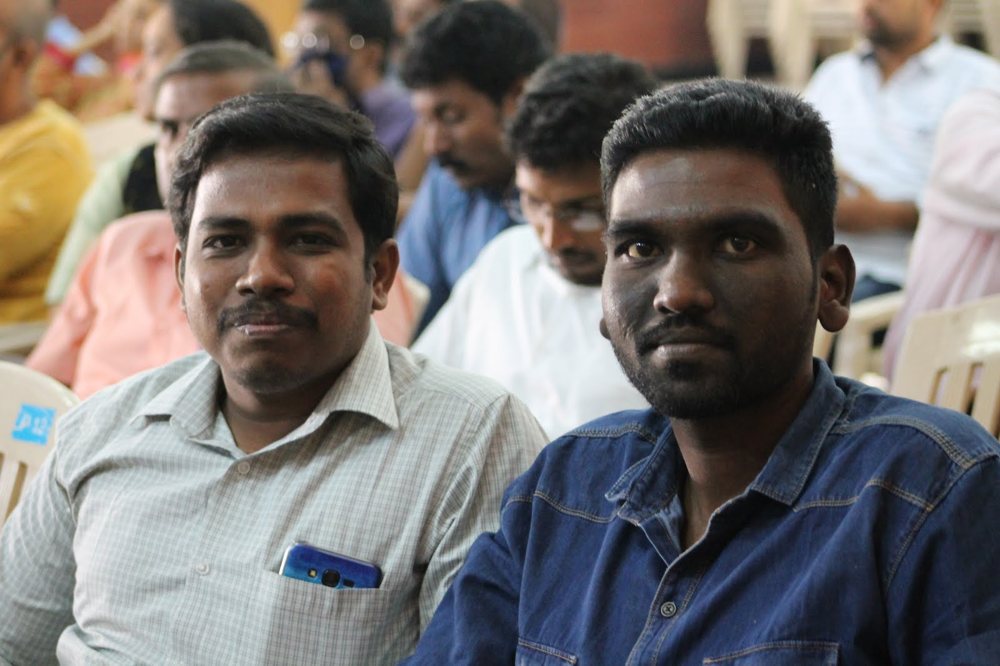
C. Muthusami, a Malaysian Tamil writer, received the Vishnupuram Literary Circle Award for 2017. Jeyamohan, writing on behalf of the Circle, described him as the starting point of modern Malaysian Tamil literature — a writer whose small body of work carries a distinct Malaysian sensibility, even though he had not sustained the momentum one usually expects of a literary pioneer. In a Malaysian literary scene long dominated by writing tied closely to political sloganeering, Muthusami's more artistic concerns had gone largely unnoticed in his own time, which the Circle saw as the real reason his output had thinned out over the years.
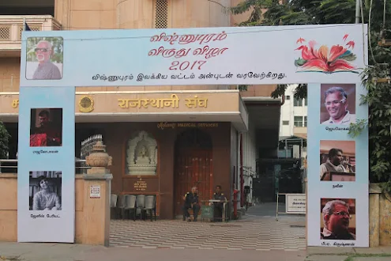
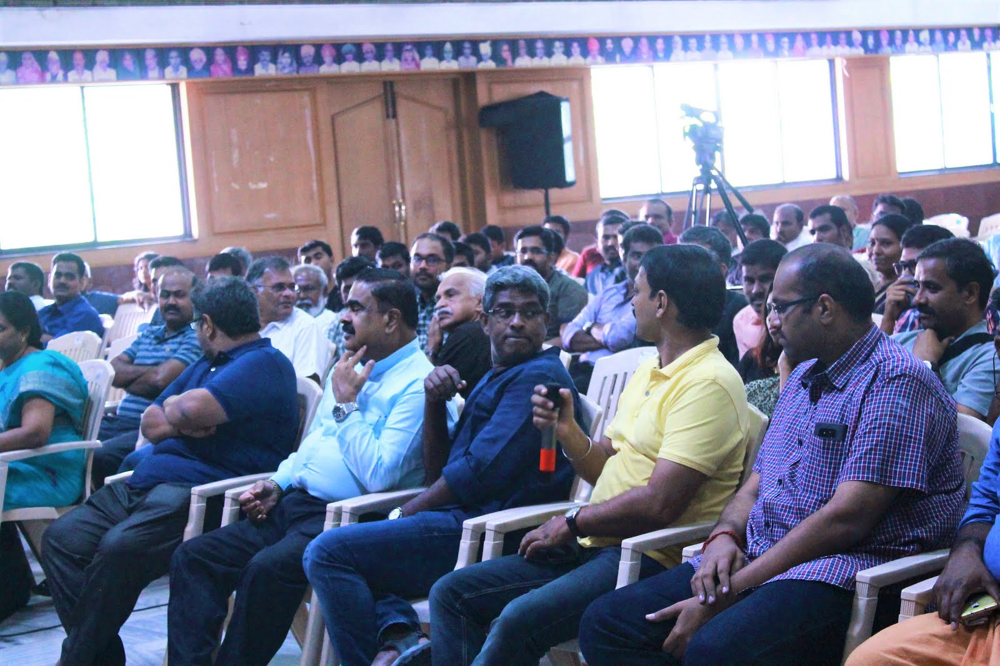
The choice was framed as more than a tribute to an individual career. It was also a statement about which figure Tamil literary circles wished to hold up as the true starting point of Malaysian Tamil writing, and what kind of literary ambition deserved to be carried forward there. The Circle noted that Tamil literature at large had never paid Malaysian Tamil writing its due attention, and hoped the award itself would help correct that.
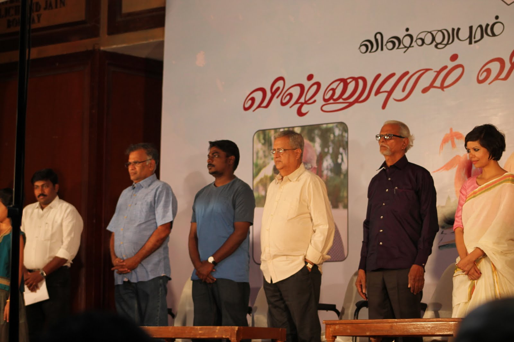
It was also noted that Muthusami's importance had only become visible again through a younger generation of Malaysian writers — among them Ma. Naveen, Su. Yuvarajan and Balamurugan — who had returned to his work and recognised in it the beginnings of a more artistically serious Malaysian Tamil literature. The Circle framed the award as, in part, a recognition of that rediscovery, and of a literary lineage — running back through the earlier critic Ku. Alagirisami — that had frayed over the years and needed to be actively renewed.
Rather than a single evening centred on one laureate, the 2017 ceremony, planned for December, was designed around Malaysian Tamil writing as a whole. Alongside the award itself, the plans included publishing one of Muthusami's novels and a critical study of his work, as well as selected-writings anthologies of two senior Malaysian Tamil writers, Ko. Punniyavaan and Shanmugasiva. Public meet-the-writer sessions were arranged to bring Malaysian writers — C. Muthusami, Ko. Punniyavaan, Shanmugasiva, Sai. Peer Muhammad, Ma. Naveen, Su. Yuvarajan and Balamurugan among them — directly in front of Tamil readers. Muthusami's books were also made available around the same time at the Coimbatore Book Fair, extending the ceremony's reach beyond the event itself.
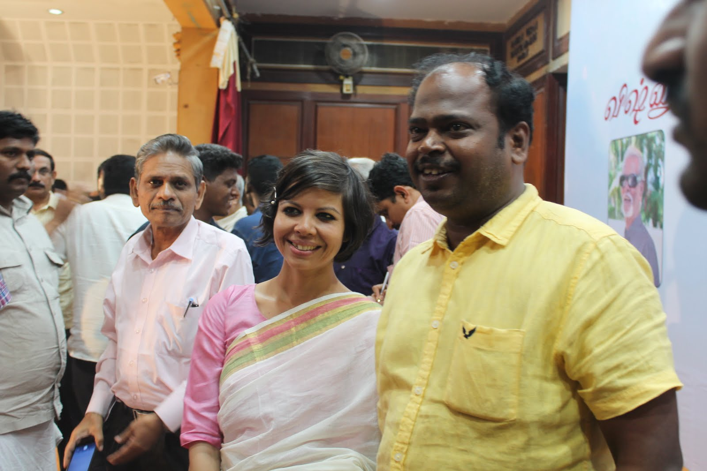
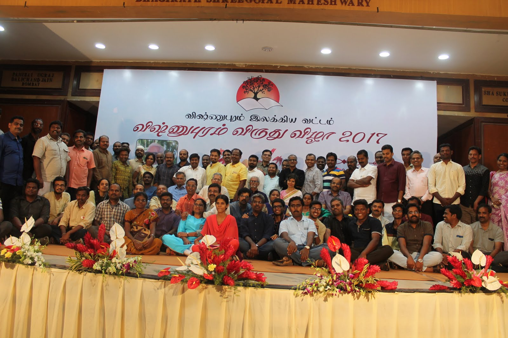
A documentary on C. Muthusami's life and work was also produced in connection with the award, giving readers who did not know him a way into his writing beyond the books themselves.
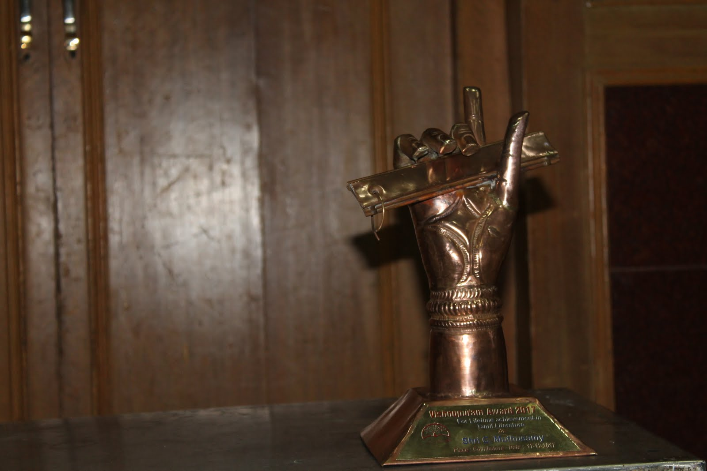
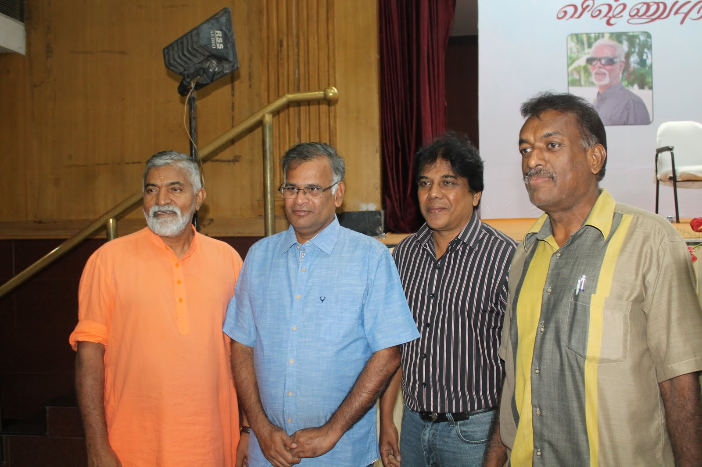

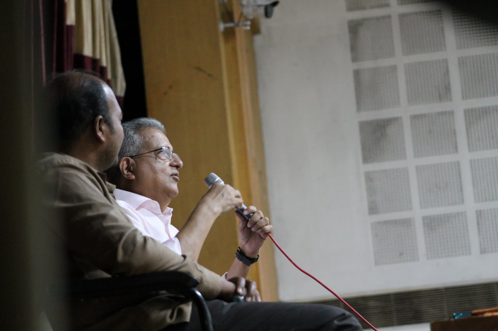
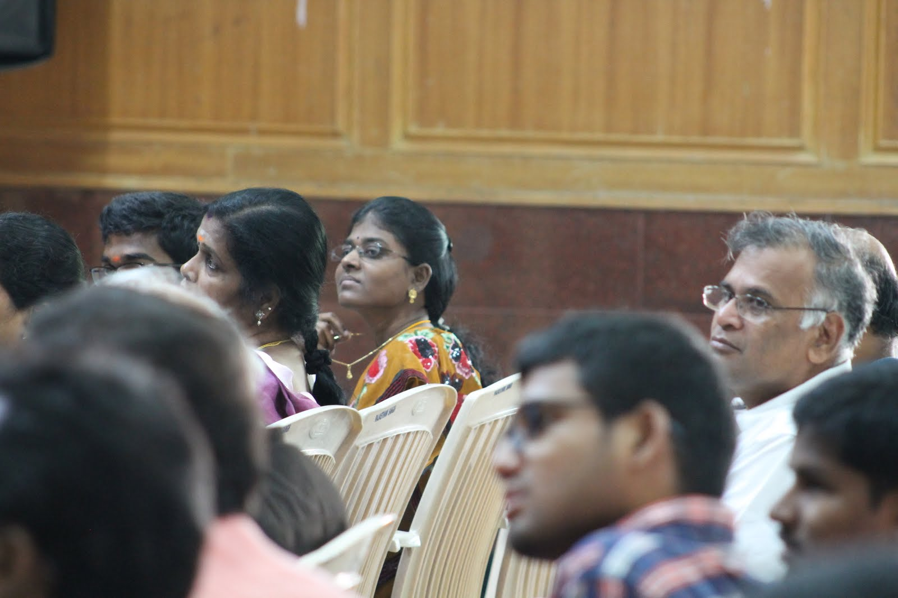
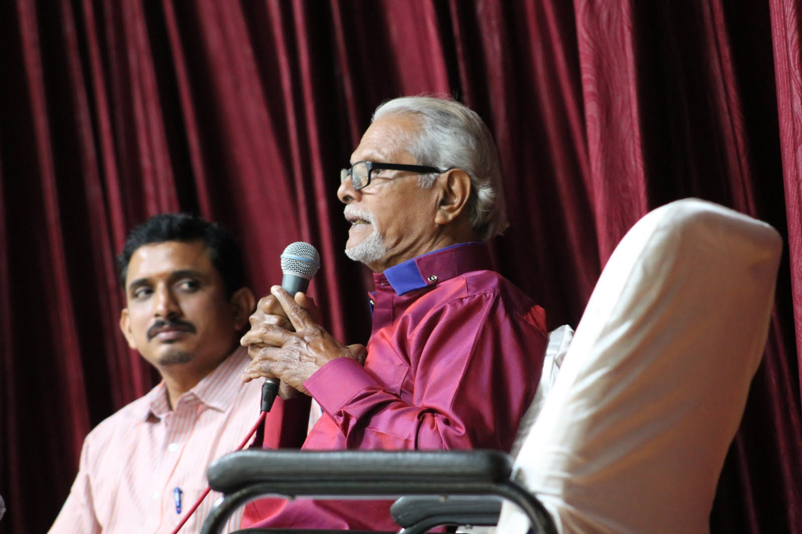
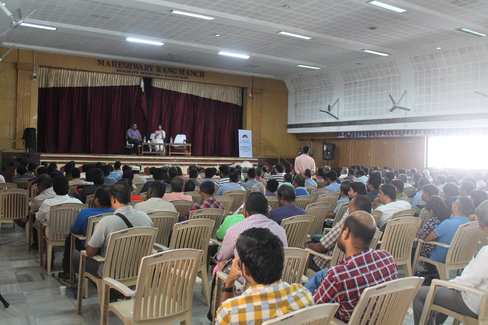
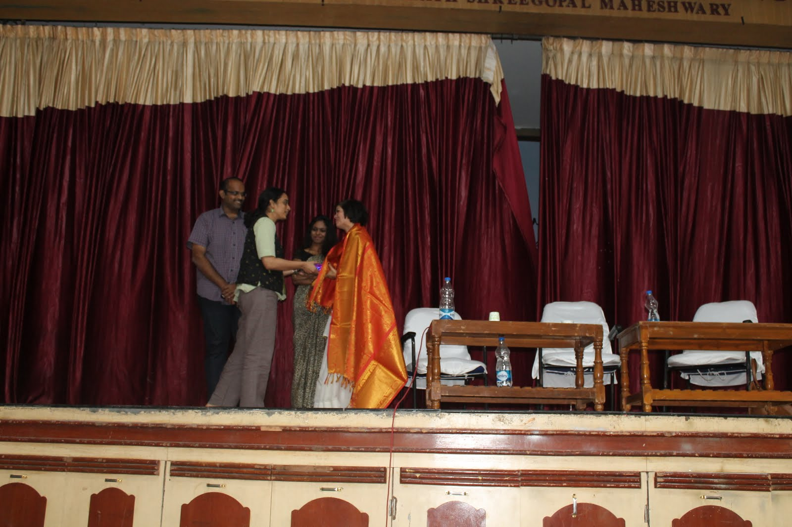
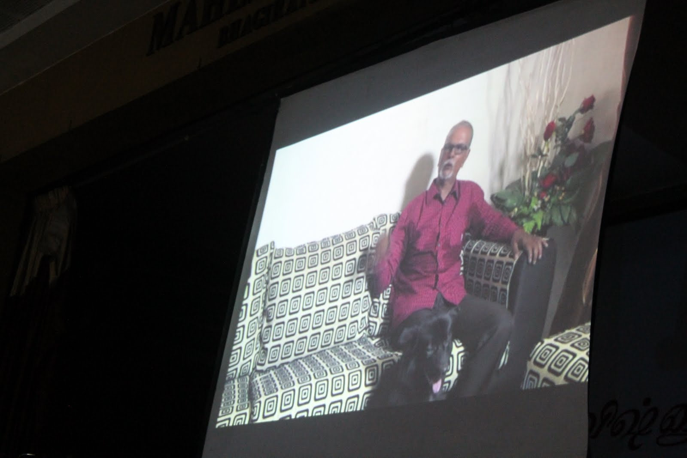
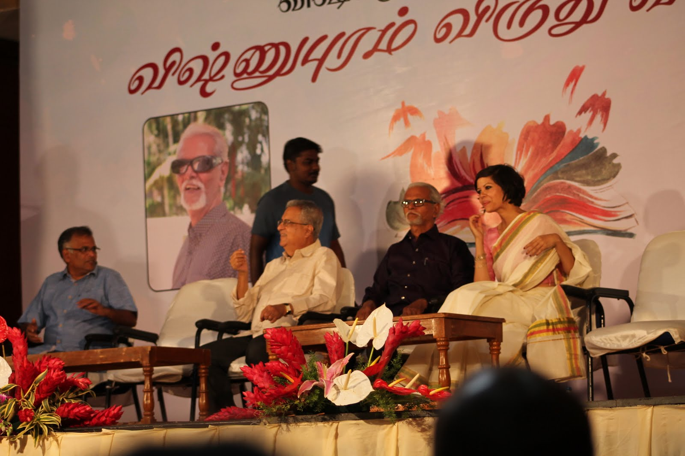
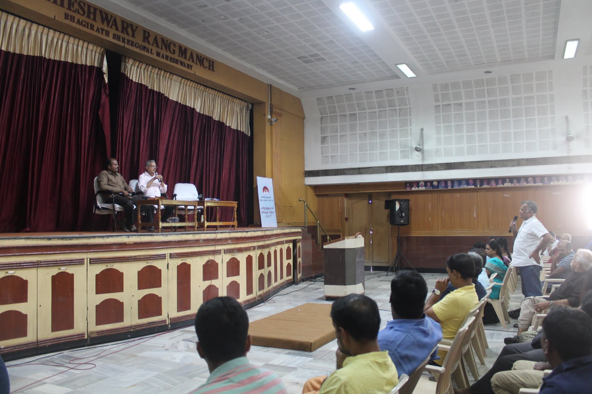
Translated and condensed from the original Tamil account(s): jeyamohan.in/104811 and jeyamohan.in/99181 · Watch highlights